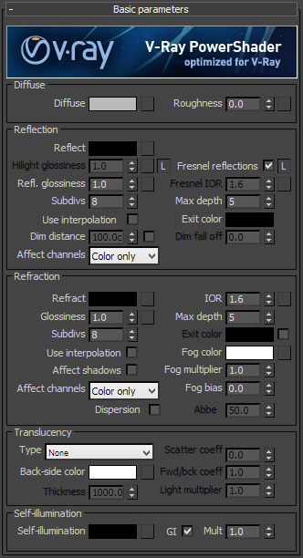
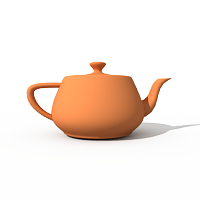
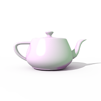

VRayMtl
VRayMtl Overview
A special material - the VRayMtl - is provided with the V-Ray renderer. This allows for better physically correct illumination (energy distribution) in the scene, faster rendering, and more convenient reflection and refraction parameters. Within the VRayMtl you can apply different texture maps, control the reflections and refractions, add bump and displacement maps, force direct GI calculations, and choose the BRDF for the material.
Diffuse Parameters
 Diffuse - this is the diffuse color of the material. Note the actual diffuse color of the surface also depends on the reflection and refraction color s. See the Energy preservation param eter below.
Roughness - this parameter can be used to simulate rough surfaces or surfaces covered with dust (for example, skin, or the surface of the moon).
Example: The Roughness Parameter
This example demonstrates the effect of the Roughness parameter. Note how, as the Roughness increases, the materials appears more "flat" and dusty.
Roughness = 0.0
(regular diffuse material)
Roughness = 0.3
Roughness = 0.6
Reflection
Reflect - reflection color. Note that the reflection color dims the diffuse surface color based on the Energy preservation option.
Example: The Reflection Color Parameter
This example demonstrates how the Reflection color parameter controls the reflectivity of the material. Note that this color also acts as a filter for the diffuse color (e.g. stronger reflections dim the diffuse component).

Reflection color = Black.
(0, 0, 0)
Reflection color = Medium Gray.
(128, 128, 128)
Reflection color = White.
(255, 255, 255)
Fresnel Reflections - checking this option makes the reflection strength dependent on the viewing angle of the surface. Some materials in nature (glass, etc.) reflect light in this manner. Note that the Fresnel effect depends on the index of refraction as well.
Fresnel IOR - the IOR to use when calculating Fresnel reflections. Normally this is locked to the Refraction IOR parameter, but you can unlock it for finer control.
Example: The Fresnel Option
This example demonstrates the effect of the Fresnel option. Note how the strength of the reflection varies with the IOR of the material. For this example, the Reflection color is pure white (255, 255, 255).
Fresnel = On
IOR
=
1.3
Fresnel = On
IOR = 2.0
Fresnel = On
IOR = 10.0
Fresnel = Off.
Highlight glossiness - this determines the shape of the highlight on the material. Normally this parameter is locked to the Reflection glossiness value in order to produce physically accurate results.
Reflection glossiness - controls the sharpness of reflections. A value of 1.0 means perfect mirror-like reflection; lower values produce blurry or glossy reflections. Use the Subdivs parameter below to control the quality of glossy reflections.
Example: The Reflection Glossiness Parameter
This example demonstrates how the Reflection glossiness and Highlight glossiness parameters control the highlights and reflection blurriness of the material.
Reflection/Highlight Glossiness = 1.0
(perfect mirror reflections)
Reflection/Highlight Glossiness = 0.8
Reflection/Highlight Glossiness = 0.6
Subdivs - controls the quality of glossy reflections. Lower values will render faster, but the result will be more noisy. Higher values take longer, but produce smoother results.
Use interpolation - V-Ray can use a caching scheme similar to the irradiance map to speed up rendering of glossy reflections. Check this option to turn caching on. See the Reflection interpolation section for more details.
Dim distance - specifies a distance after which the reflection rays will not be traced.
Dim fall off - a fall off radius for the dim distance.
Affect Channels - Allows you to specify which channels are going to be affected by the reflection of the material
-
Color Only - the reflection will affect only the RGB channel of the final render
-
Color+alpha - this will cause the material to transmit the alpha of the reflected objects, instead of displaying an opaque alpha. Note that currently this works only with clear (non-glossy) reflections.
-
All channels - all channels and render elements will be affected by the reflections of the material.
Max depth - the number of times a ray can be reflected. Scenes with lots of reflective and refractive surfaces may require higher values to look right.
Exit color - if a ray has reached its maximum reflection depth, this color will be returned without tracing the ray further.
Refraction
Refract -
refraction color. Note that the actual refraction color depends on the reflection color as well. See the
Energy preservation
parameter below.
Example: The Refraction Color Parameter
This example demonstrates the effect of the Refraction color parameter to produce glass materials. For the images in this example, the material has a gray Diffuse color, white Reflection color, and the Fresnel option is turned on.
Refraction color = Black
(0, 0, 0)
no refraction
Refraction color = Light Gray
(192, 192, 192)
Refraction color = White
(255, 255, 255)
IOR
-
index of refraction for the material, which describes the way light bends when crossing the material surface. A value of 1.0 means the light will not change direction.
Example: The Refraction IOR Parameter
This example demonstrates the effect of the Refraction IOR parameter. Note how light bends more as the IOR deviates from 1.0. When the index of refraction (IOR) is 1.0, the render produces a transparent object. Note however, that in the case of transparent objects, it might be better to assign an opacity map to the material, rather than use refraction.
Refraction IOR = 0.8
Refraction IOR = 1.0
Refraction IOR = 1.3
Refraction IOR = 1.8
Glossiness
- controls the sharpness of refractions. A value of 1.0 means perfect glass-like refraction; lower values produce blurry or glossy refractions. Use the Subdivs parameter below to control the quality of glossy refractions.
Example: The Refraction Glossiness Parameter
This example demonstrates the effect of the Refraction glossiness parameter. Note how lower Refraction glossiness values blur the refractions and cause the material to appear as frosted glass.
Refraction glossiness = 1.0
Refraction glossiness = 0.9
Refraction glossiness = 0.8
Subdivs - controls the quality of glossy refractions. Lower values will render faster, but the result will be more noisy. Higher values take longer, but produce smoother results. This parameter also controls the quality of the translucent effect, if on (see below).
Use interpolation - V-Ray can use a caching scheme similar to the irradiance map to speed up rendering of glossy refractions and translucency. Check this option to turn caching on. See the Refraction interpolation section for more details.
Max depth - the number of times a ray can be refracted. Scenes with lots of refractive and reflective surfaces may require higher values to look right.
Example: The Refraction Depth Parameter
This example demonstrates the effect of the Refraction depth parameter. Note how too low of a refraction depth produces incorrect results. Also, in the last two examples, note how areas with total internal reflection are also affected by the Reflection depth .
Refraction depth = 1
Reflection depth = 5
Refraction depth = 2
Reflection depth = 5
Refraction depth = 4
Reflection depth = 5
Refraction depth = 8
Reflection depth = 5
Refraction depth = 8
Reflection depth = 8
Exit color
- if this is on, and a ray has reached the maximum refraction depth, the ray will be terminated and the exit color returned. When this is off, the ray will not be refracted, but will be continued without changes.
Example: The Refraction Exit Color Parameter
This example demonstrates the effect of the refraction Exit color parameter. This is mostly useful to show areas of deep refractions in the image, or for materials needing higher refraction depth. Note how the red areas are reduced when the Reflection depth and Refraction depth are increased.
Refraction Exit color = Off
Reflection depth = 5
Refraction depth = 5
Refraction Exit color = On
Refraction Exit color = Red
(255, 0, 0)
Reflection depth is 5
Refraction depth is 5
Refraction Exit color = On
Reflection depth = 8
Refraction depth = 8
Fog color
- the attenuation of light as it passes through the material. This option allows the user to simulate the fact that thick objects look less transparent than thin objects. Note that the effect of the fog color depends on the absolute size of the objects and is therefore scene-dependent unless the
Fog system units scaling
is enabled. The fog color also determines the look of the object when using translucency.
Example: The Fog Color Parameter
This example demonstrates the effect of the Fog color parameter. Notice how the thick areas of the object are darker in the two images on the right because of the light absorption of the fog.

Fog color = White
(255, 255, 255)
no light absorption
Fog color = Gray
(243, 243, 243)
Fog color = Green
(230, 243, 213)
Fog multiplier
- the strength of the fog effect. Smaller values reduce the effect of the fog, making the material more transparent. Larger values increase the fog effect, making the material more opaque. In more precise terms, this is the inverse of the distance at which a ray inside the object is attenuated with am amount equal to the
Fog color
.
Example: The Fog Multiplier Parameter
This example demonstrates the effect of the Fog multiplier parameter. Smaller values cause less light absorption because of the fog; while higher values increase the absorption effect.
Fog multiplier = 0.5
Fog multiplier = 1.0
Fog multiplier = 1.5
Fog bias - this parameter allows the user to change the way the fog color is applied; by adjusting this parameter, you can make thin parts of the object to appear more transparent or less transparent than normal.
Affect shadows - this will cause the material to cast transparent shadows, depending on the refraction color and the fog color. This only works with V-Ray shadows and lights.
Affect Channels - Allows you to specify which channels are going to be affected by the transparency of the material
-
Color Only - the transparency will affect only the RGB channel of the final render
-
Color+alpha - this will cause the material to transmit the alpha of the refracted objects, instead of displaying an opaque alpha. Note that currently this works only with clear (non-glossy) refractions.
-
All channels - all channels and render elements will be affected by the transparency of the material
Dispersion - this option enables the calculation of true light wavelength dispersion.
Abbe - this option allows you to increase or decrease the dispersion effect. Lowering it widens the dispersion and vice versa.
Example: Dispersion
This example demonstrates the Dispersion capabilities of the V-Ray material and the effect of the Abbe parameter.
Dispersion = Off
Dispersion = On
Abbe = 10
Dispersion = On
Abbe = 50
Translucency
Type - selects the algorithm for calculating translucency (also called sub-surface scattering). Note that refraction must be enabled for this effect to be visible. Currently only single-bounce scattering is supported. The possible values are:
-
None - no translucency is calculated for the material;
-
Hard (wax) model - this model is specifically suited for hard materials like marble;
-
Soft (water) model - this model is mostly for compatibility with older V-Ray versions (1.09.x);
-
Hybrid model - this is the most realistic sss model and is suitable for simulating skin, milk, fruit juice and other translucent materials.
Back-side color - normally the color of the sub-surface scattering effect depends on the Fog color; this parameter allows you to additionally tint the SSS effect.
Thickness - this limits the rays that will be traced below the surface. This is useful if you do not want or do not need to trace the whole sub-surface volume.
Light multiplier - a multiplier for the translucent effect.
Scatter coefficient - the amount of scattering inside the object. 0.0 means rays will be scattered in all directions; 1.0 means a ray cannot change its direction inside the sub-surface volume.
Forward/backward coefficient - controls the direction of scattering for a ray. 0.0 means a ray can only go forward (away from the surface, inside the object); 0.5 means that a ray has an equal chance of going forward or backward; 1.0 means a ray will be scattered backward (towards the surface, to the outside of the object).
Self-Illumination
Self-Illumination - controls the emission of the surface.
GI - when enabled, the self-illumination affects global illumination rays and allows the surface to cast light on nearby objects. Note however, that it may be more efficient to use area lights or VRayLightMtl material for this effect.
Multiplier - a multiplier for the self-illumination effect. This is useful if you need to boost the self-illumination values so that the surface produces stronger illumination with GI.
BRDF
BRDF parameters determine the type of the highlights and glossy reflections for the material. The parameters have an effect only if the reflection color is different from black and reflection glossiness is different than 1.0.
Type - this determines the type of BRDF (the shape of the highlight):
-
Phong - Phong highlight/reflections
-
Blinn - Blinn highlight/reflections
-
Ward - Ward highlight/reflections
Example: The BRDF Type
This example demonstrates the differences between the BRDFs available in V-Ray. Note the different highlights produced by the different BRDFs.
BRDF type = Phong

BRDF type = Blinn
BRDF type = Ward
Soften
- this parameter allows the user to soften the transition from dark to bright areas in specular reflections.
Example: Soften
This example demonstrates the effect of the soften parameter.
Soften = -1

Soften = 0
Soften = 1
Fix dark glossy edges - enabling this option will fix dark edges that sometimes appear on objects with glossy materials
Anisotropy - determines the shape of the highlight. A value of 0.0 means isotropic highlights. Negative and positive values simulate "brushed" surfaces.
Example: The Anisotropy Parameter
This example demonstrates the effect of the Anisotropy parameter. Note how the different values stretch the reflections horizontally or vertically.
Anisotropy = -0.9
Anisotropy = -0.45
Anisotropy = 0.0
no anisotropy
Anisotropy = 0.45
Anisotropy = 0.9
Rotation - determines the orientation of the anisotropic effect in degrees (rotation in degrees). Different brushed surfaces can be simulated by using a texture map for the anisotropy rotation parameter.
Example: The Anisotropy Rotation Parameter
This example demonstrates the effect of the Anisotropy rotation parameter. For all the images in this example, the Anisotropy parameter itself is 0.8.
Anisotropy rotation =
0.0 degrees
Anisotropy rotation =
45.0 degrees
Anisotropy rotation =
90.0 degrees

Anisotropy rotation =
135.0 degrees
Anisotropy rotation =
Bitmapped
map in the upper-right corner
Local axis - controls how the direction for the anisotropic effect is chosen:
-
Local axis - the direction is based on the selected local object axis.
-
Map channel - the direction is based on the selected mapping channel.
Options
Trace reflections - if this is off, reflections will not be traced, even if the reflection color is greater than black. You can turn this off to produce only highlights. Note that when this is off, the diffuse color will not be dimmed by the reflection color, as would happen normally.
Trace refractions - if this is off, refractions will not traced, even if the refraction color is greater than black.
Cutoff - this is a threshold below which reflections/refractions will not be traced. V-Ray tries to estimate the contribution of reflections/refractions to the image, and if it is below this threshold, these effects are not computed. Do not set this to 0.0 as it may cause excessively long render times in some cases.
Environment priority - this specifies how to determine the environment to use if a reflected or refracted ray goes through several materials each of which has an environment override.
Double-sided - if this is checked, V-Ray will flip the normal for back-facing surfaces with this material. Otherwise, the lighting on the "outer" side of the material will be computed always. You can use this to achieve a fake translucent effect for thin objects like paper.
Reflect on back side - if this is checked , reflections will be computed for back-facing surfaces too. Note that this affects total internal reflections too (when refractions are computed).
Use irradiance map - if this is checked , the irradiance map will be used to approximate diffuse indirect illumination for the material. If this is off, brute force GI will be used. You can use this for objects in the scene which have small details and are not approximated very well by the irradiance map.
Fog system units scaling - when enabled, the fog color attenuation becomes dependent on the current system units.
Override material effect - if this is checked, Effect ID can be used to input values for Material ID.
Example: Fog System Units Scaling
This example demonstrates the usage of the Fog system units scaling check box. The teapot in the scene has a radius of four meters. When the Fog system units scaling is disabled we can see through the teapot. However when we enable the Fog system units scaling the real size of the object is taken into consideration and we can see that the light is absorbed to a much greater extent.
Fog system units scaling = Off
Fog system units scaling = On
Treat glossy rays as GI rays - this specifies on what occasions glossy rays will be treated as GI rays:
-
Never - glossy rays are never treated as GI rays.
-
Only for GI rays - glossy rays will be treated as GI rays only when GI is being evaluated. This can speed up rendering of scenes with glossy reflections and is the default.
-
Always - glossy rays are always treated as GI rays. A side effect is that the Secondary GI engine will be used for glossy rays. For example, if the primary engine is irradiance map, and the secondary is light cache, the glossy rays will use the light cache (which is a lot faster).
Energy preservation mode - determines how the diffuse, reflection, and refraction color affect each other. V-Ray tries to keep the total amount of light reflected off a surface to be less than or equal to the light falling on the surface (as this happens in the real life). For this purpose, the following rule is applied: the reflection level dims the diffuse and refraction levels (a pure white reflection will remove any diffuse and refraction effects), and the refraction level dims the diffuse level (a pure white refraction color will remove any diffuse effects). This parameter determines whether the dimming happens separately for the RGB components or is based on the intensity:
-
RGB - this mode causes dimming to be performed separately on the RGB components. For example, a pure white diffuse color and pure red reflection color will give a surface with cyan diffuse color (because the red component is already taken by the reflection).
-
Monochrome - this mode causes dimming to be performed based on the intensity of the diffuse/reflection/refraction levels.
Example: The Energy Preservation Mode Parameter
This example demonstrates how the Energy preservation mode controls the way reflections dim the diffuse color.
Energy Preservation = RGB.
Reflection color = Medium Gray.
(128, 128, 128)

Energy Preservation
=
RGB.
Reflection color = Medium Green.
(0, 128, 0)

Energy Preservation
= Monochrome.
Reflection color = Medium Gray.
(128, 128, 128)
Energy Preservation = Monochrome.
Reflection color = Medium Green.
(0, 128, 0)
Maps
These determine the various texture maps used by the material.
Reflect Interpolation
These determine the options for the interpolation of glossy reflections. They are very similar to the options for the irradiance map. Note that it is not recommended to use interpolation for animations, since this may cause severe flickering.
Refract Interpolation
These determine the options for the interpolation of glossy reflections. They are very similar to the options for the irradiance map. Note that it is not recommended to use interpolation for animations, since this may cause severe flickering.
Notes
-
Use the VRayMtl whenever possible in your scenes. This material is specifically optimized for V-Ray and often GI and lighting is computed much faster for V-Ray materials than for standard 3ds Max materials. Many V-Ray features (e.g. light cache, photon mapping, render elements ) are guaranteed to work properly only with VRayMtl and other V-Ray compliant materials.
-
VRayMtl can produce reflections/refractions for matte objects - see VRayMtlWrapper .